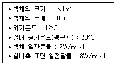
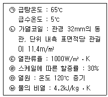
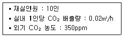
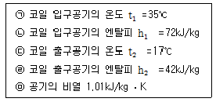
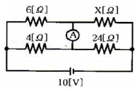
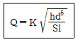
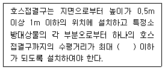
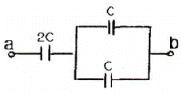
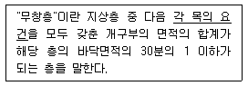
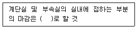

건축설비기사 (2017-05-07 기출문제)
1과목: 건축일반
1. 학교의 운영방식에 관한 설명으로 옳은 것은?
- 종합교실형은 학생의 이동이 없이 자기 교실내에서만 학습하는 방식이다.
- 달톤형은 전 학급을 2~3그룹으로 나누어 시설이용의 효율화를 도모하는 방식이다.
- 플래툰형은 학생 각자 능력에 따라 교과를 선택하는 방식이다.
- 교과교실형은 일반교실이 각 학급에 하나씩 배당되고 그 밖에 특별교실을 갖는 방식이다.
(정답률: 78%)

2. 보강블록구조에 관한 설명으로 옳은 것은?
- 내력벽은 수직 ㆍ 수평하중을 모두 받는다.
- 개구부는 내력벽이 교차하는 곳에 두는 것이 유리하다.
- 벽량은 단위면적당 내력벽의 넓이를 나타낸 것이다.
- 내력벽의 두께는 100mm 정도가 적당하다.
(정답률: 69%)
3. 아파트 단면 형식 중 복층형(maisonette type)의 장점을 잘못 설명한 것은?
- 거주성과 프라이버시가 양호하다.
- 소규모에 유리한 형식이다.
- 주택내 공간의 변화가 있다.
- 유효면적이 증가한다.
(정답률: 90%)
4. 아파트 평면형식 중에서 일조 및 통풍이 유리하고, 공용복도에 있어 프라이버시가 침해될 수 있으나 같은층에 거주하는 사람과의 친교 기회가 많은 형식은?
- 홀형
- 집중형
- 편복도형
- 중복도형
(정답률: 94%)
5. 왕대공 지붕틀에서 평보와 ㅅ자보의 접합부에 사용되는 철물은?
- 안장쇠
- 띠쇠
- 감잡이쇠
- 볼트
(정답률: 61%)
6. 호텔의 각부계획에 관한 설명으로 옳지 않은 것은?
- 보이실, 린넨실은 숙박부 각 객실의 중심에 인접배치시킨다.
- 로비나 라운지는 공용부분의 중심부로서 특색있는 분위기를 만드는 것이 좋다.
- 객실수에 대한 주(主)식당의 면적비율은 커머셜호텔이 리조트호텔보다 높다.
- 지배인실은 외래객이 알기 쉬운 곳에 배치하여 자유롭게 출입할 수 있도록 한다.
(정답률: 79%)
7. 다음 중 사무소 건축에서 코어플랜(core plan)의 이점과 가장 관계가 먼 것은?
- 부지를 경제적으로 사용할 수 있으며, 사무실의 독립성이 보장된다.
- 코어의 외곽이 내진벽 역할을 할 수 있다.
- 사무소의 임대면적 비율(rentable ratio)을 높일 수있다.
- 각 층에서 설비계통의 거리가 비교적 균등하게 되므로 최대부하를 줄일 수 있고 순환도 용이하게 된다.
(정답률: 61%)
8. 종합병원의 병실계획에 관한 설명으로 옳지 않은 것은?
- 병실의 출입문의 폭은 침대가 통과할 수 있는 폭이어야 한다.
- 병실의 창문 높이는 환자가 병상에서 외부를 전망할수 있도록 하는 것이 좋다.
- 병실의 천장은 조도가 높은 마감재료를 사용한다.
- 환자마다 손이 닫는 위치에 간호사 호출용 벨을 설치한다.
(정답률: 91%)
9. 건축물 계획 시 사용하는 모듈(module)의 장점에 해당하는 것은?
- 설계 작업의 다양화가 가능하다.
- 건축구성재의 소량생산이 용이해진다.
- 현장작업이 단순해진다.
- 건축구성재의 생산비가 높아진다.
(정답률: 78%)
10. 소음방지대책 및 기술에 관한 설명으로 옳지 않은 것은?
- 소음방지대책은 소음원을 제거하거나 소음원 레벨을 저감시키는 것이 가장 바람직하다.
- 건물내부의 고체전달소음은 일반적으로 장애범위가 공기전달소음보다 좁고 대책수립이 간단하다.
- 경로대책은 음원에서의 거리 또는 장애물에 의한 음의 감쇠 등의 성질을 이용한 것이다.
- 급배수시에 발생하는 소음 전반을 방지 또는 저감시키기 위해서는 설계단계부터 배려할 필요가 있다.
(정답률: 86%)
11. 플랫 슬래브(flat slab)구조의 특성으로 볼 수 없는 것은?
- 내부에는 보가 없이 바닥판만으로 구성된다.
- 실내공간 이용률이 높다.
- 기둥 상부는 깔대기모양으로 확대하고 그 위에 드롭패널을 설치한다.
- 바닥판이 얇아져 고정하중이 작아진다.
(정답률: 83%)
12. 상점계획에서 진열장(show case)의 배치 시 고려사항으로 옳지 않은 것은?
- 들어오는 손님과 종업원의 시선이 직접 마주치도록할 것
- 감시하기 쉽고 또한 손님에게는 감시한다는 인상을 주지 않도록 할 것
- 손님과 종업원의 동선을 원활하게 하여 다수의 손님을 수용하고 소수의 종업원으로 관리하기에 편리하도록할 것
- 손님쪽에서 상품이 효과적으로 보이도록 할 것
(정답률: 88%)
13. 에스컬레이터에 관한 설명으로 옳지 않은 것은?
- 직렬식은 점유면적이 크고, 승객의 시야가 좋으나, 승객의 시야가 일방향으로 한정된다.
- 병렬식은 실내를 내려다보는 조망이 유리하며, 교차식에 비하여 점유면적이 작다.
- 교차식은 직렬식에 비하여 점유면적이 작으며, 조망이 불리하다.
- 수송능력이 엘리베이터에 비해 크다.
(정답률: 69%)
14. 사무소건물의 실배치 계획 중 개방식 배치의 특징이 아닌 것은?
- 전 면적을 유용하게 이용할 수 있다.
- 커뮤니케이션의 융통성이 있다.
- 독립성과 쾌적감의 이점이 있다.
- 실의 길이나 깊이에 변화를 줄 수 있다.
(정답률: 87%)
15. 건물의 하부 전체 또는 지하실 전체를 하나의 기초판으로 구성한 기초로서 매트기초라고도 불리우는 것은?
- 독립기초
- 온통기초
- 줄기초
- 복합기초
(정답률: 88%)
16. 학교의 교실배치방식 중 클러스터(cluster)형에 관한 특징으로 옳지 않은 것은?
- 교실 간 간섭 및 소음이 적다.
- 각 교실이 외부와 접하는 면적이 많다.
- 교실 단위의 독립성이 크다.
- 마스터플랜의 융통성이 작다.
(정답률: 76%)
17. 다음과 같은 조건에서 실내측 벽면의 표면온도는?

- 18℃
- 19℃
- 20℃
- 21℃
(정답률: 69%)
18. 결로를 방지하기 위한 방법으로 옳지 않은 것은?
- 냉방을 하여 건물내부의 표면온도를 노점온도 이하로 한다.
- 환기를 통해 습한 공기를 제거한다.
- 벽체 내부의 수증기압을 포화수증기압보다 작게 한다.
- 단열을 강화하여 구조체의 열손실을 줄인다.
(정답률: 81%)
19. 철근의 피복두께를 확보하기 위해서 사용되는 재료는?
- 컬럼밴드(column band)
- 세퍼레이터(separator)
- 폼타이(form tie)
- 스페이서(spacer)
(정답률: 74%)
20. 주택의 설비시설 고도화와 에너지 절약대책에 관한 설명으로 옳지 않은 것은?
- 현재는 설비시설에 대한 투자비가 증가하는 추세이다.
- 설비시설을 집중화하는 계획을 한다.
- 재활용에너지 설비는 초기투자비가 저렴한 반면 유지관리비가 많이 드는 단점아 있다.
- 설비계획은 처음 설치할 때 많은 비용을 투자하더라도 이후에 발생되는 관리비를 적게 하는 것이 목표이다.
(정답률: 91%)
2과목: 위생설비
21. 오수정화시설의 처리공법 중 활성오니법에 속하는 것은?
- 장기폭기방법
- 접촉산화방법
- 살수여상방법
- 회전원판접촉방법
(정답률: 77%)
22. 양수펌프 중심으로부터 2m 위에 저수조 수위가 일정하게 있고, 고가수조 수위는 펌프 중심으로 부터 30m위에 있다. 양수배관 전체길이가 38m, 펌프의 토출압력이 15kPa일 때 최저 필요양정은? (단, 양수배관의 마찰손실수두는 50mmAq/m, 관이음 및 밸브류의 상당길이는 배관길이의 50%로 한다.)
- 30.85m
- 32.35m
- 34.85m
- 36.35m
(정답률: 51%)
23. 수도본관으로부터 저수탱크에 저수한 후 급수 펌프로 건물 내에 급수하는 방식은?
- 고가탱크방식
- 펌프직송방식
- 수도직결방식
- 압력탱크방식
(정답률: 73%)
24. 다음 중 간접배수로 하여야 하는 기구에 속하지 않는 것은?
- 세탁기
- 세면기
- 제빙기
- 식기세정기
(정답률: 85%)
25. 관 균등표에 의한 관경 결정 시 필요 없는 것은?
- 균등수
- 유량선도
- 기구의 접속관경
- 기구의 동시사용률
(정답률: 68%)
26. 다음 중 수자원 절약을 위한 배수 재이용시에 검토할 사항과 가장 거리가 먼 것은?
- 공급시설의 안정성
- 재이용수의 사용범위
- 상수(上水)기구의 구성요소
- 배수의 수량과 수질의 안정성
(정답률: 82%)
27. 급수배관시스템에서 수격작용 발생에 따른 압력 상승에 관한 설명으로 옳지 않은 것은?
- 관두께에 비례한다.
- 배관경에 비례한다.
- 유체의 속도에 비례한다.
- 압력파의 전달속도에 비례한다.
(정답률: 54%)
28. 세정밸브식 대변기에서 토수된 물이나 이미 사용된 물이 역사이폰 작용에 의해 상수계통으로 역류하는 것을 방지하는 기구는?
- 볼탭
- 슬리브
- 스트레이너
- 버큠 브레이커
(정답률: 84%)
29. 기구급수부하단위(Fu)가 lFu인 위생기구의 종류 및 접속관경으로 옳은 것은?
- 세면기, 15mm
- 세면기, 25mm
- 대변기, 15mm
- 대변기, 25mm
(정답률: 75%)
30. 펌프의 전양정이 41.6m, 양수량이 400L/min일 때, 펌프의 축동력은? (단, 펌프의 효율은 55%이다.)
- 3.94kW
- 4.54kW
- 4.94kW
- 5.44kW
(정답률: 73%)
31. 급배수설비의 기본 원칙으로 옳지 않은 것은?
- 우수는 공공하수도에 배수하지 않도록 한다.
- 상수의 급수계통은 크로스 커넥션이 되어서는 안된다.
- 탱크 및 배수계통에는 통기관 등과 같은 적절한 통기 조치를 한다.
- 급수계통은 역류나 역사이폰 작용의 위험이 생기지 않도록 한다.
(정답률: 73%)
32. 배수트랩에 관한 설명으로 옳지 않은 것은?
- P트랩은 세면기 배수에 주로 이용된다.
- U트랩은 옥내 배수 수평주관 계통에 이용된다.
- S트랩은 욕실 및 다용도실의 바닥배수에 주로 이용 된다.
- 트랩은 하수 유해 가스가 역류해서 실내로 침입하는 것을 방지하기 위해서 설치한다.
(정답률: 72%)
33. 물의 경도에 관한 설명으로 옳지 않은 것은?
- 경도의 표시는 도(度) 또는 ppm이 사용된다.
- 경도가 큰 물을 경수, 경도가 낮은 물을 연수라고 한다.
- 일반적으로 물이 접하고 있는 지층의 종류와 관계없이 지표수는 경수, 지하수는 연수로 간주된다.
- 물의 경도는 물 속에 녹아있는 칼슘, 마그네슘 등의 염류의 양을 탄산칼슘의 농도로 환산하여 나타낸 것이다.
(정답률: 77%)
34. 배수 및 통기배관에 관한 설명으로 옳지 않은 것은?
- 기구배수관의 통기는 트랩위어 위로 연결한다.
- 배수수직관의 관경은 배수의 흐름방향으로 축소하지 않는다.
- 배수수평관에는 배수와 그것에 포함되어 있는 고형물을 신속하게 배출하기 위하여 구배를 두어야 한다.
- 간접배수계통 및 특수배수계통의 통기관은 다른 통기계통과 접속하여 공동으로 대기 중에 개구한다.
(정답률: 68%)
35. 중앙식 급탕방법 중 간접가열식에 관한 설명으로 옳지 않은 것은?
- 고압보일러가 필요하다.
- 대규모 급탕설비에 적합하다.
- 보일러를 난방설비와 겸용할 수 있다.
- 저탕조에는 온도조절장치(thermostat)를 설치하여 온도를 조절한다.
(정답률: 83%)
36. 4℃ 물을 100℃로 가열하였을 때 팽창한 체적의 비율은? (단, 4℃ 물의 밀도는 lkg/L, 100℃ 물의 밀도는 0.9586kg/L)
- 2.78%
- 3.13%
- 4.32%
- 5.42%
(정답률: 71%)
37. 신축곡관이라고도 하며, 구부림을 이용하여 배관의 신축을 흡수하는 신축이음쇠는?
- 루프형
- 벨로즈형
- 슬리브형
- 스위블형
(정답률: 66%)
38. 관내유동에서 층류와 난류를 판단하는 기준이 되는 것은?
- 마하(Mach)수
- 프란틀(Prandtl)수
- 그라숍(Grashof)수
- 레이놀즈(Reynolds)수
(정답률: 86%)
39. 급탕설비에 관한 설명으로 옳지 않은 것은?
- 급탕사용량을 기준으로 급탕순환펌프의 유량을 산정한다.
- 급수압력과 급탕압력이 동일하도록 배관 구성을 하는 것이 바람직하다.
- 급탕부하단위수는 일반적으로 급수부하단위수의 3/4을 기준으로 한다.
- 급탕 배관시 수평주관은 상향 배관법에서는 급탕관은 앞올림구배로 하고 환탕관은 앞내림 구배로 한다.
(정답률: 40%)
40. 다음과 같은 조건에서 어느 건물의 시간 최대 예상 급탕량이 4000L/h일 때, 저탕조 내의 가열 코일의 길이는?

- 약 5.9m
- 약 30.9m
- 약 48.8m
- 약 65.2m
(정답률: 46%)
3과목: 공기조화설비
41. 공기조화방식 중 팬코일 유닛방식에 관한 설명으로 옳지 않은 것은?
- 각 유닛의 수동제어가 불가능하다.
- 덕트 방식에 비해 유닛의 위치 변경이 쉽다.
- 각 실에 수배관으로 인한 누수의 우려가 있다.
- 유닛을 창문 밑에 설치하면 콜드 드래프트를 줄일수 있다.
(정답률: 78%)
42. 다음 중 동관의 사용용도로 가장 부적합한 것은?
- 급수관
- 급탕관
- 증기관
- 냉온수관
(정답률: 84%)
43. 다음과 같은 조건에서 실내 CO2의 허용농도를 1000ppm으로 할 때, 필요환기량은?

- 249.2m3/h
- 275.4m3/h
- 307.7m3/h
- 356.8m3/h
(정답률: 63%)
44. 온수난방방식의 분류에 관한 설명으로 옳지 않은 것은?
- 순환방식에 따라 중력식과 강제식으로 분류할 수 있다.
- 배관방식에 따라 단관식과 복관식으로 분류할 수 있다.
- 온수온도에 따라 저온수식과 고온수식으로 분류할수 있다.
- 팽창탱크방식에 따라 상향식과 하향식으로 분류할수 있다.
(정답률: 71%)
45. 건구온도 20℃, 절대습도 0.015kg/kg′인 습공기 6kg의 엔탈피는? (단, 건공기 정압비열 1.01kJ/kg ㆍ K, 수증기 정압 비열 1.85kJ/kg ㆍ K, 0℃에서 포화수의 증발 잠열 2501kJ/kg)
- 58.24kJ
- 120.67kJ
- 228.77kJ
- 349.62kJ
(정답률: 50%)
46. 다음의 송풍기 풍량제어법 중 축동력이 가장 적게 소요되는 것은?
- 회전수제어
- 토출댐퍼제어
- 흡입댐퍼제어
- 흡입베인제어
(정답률: 84%)
47. 각 방열기에 온수를 균등하게 공급하기 위해 각 방열기에 대한 공급관과 환수관의 길이를 대체로 같게 하는 배관방식은?
- 재순환방식
- 역환수방식
- 변유량방식
- 직접환수방식
(정답률: 84%)
48. 공기조화기용 코일에 관한 설명으로 옳지 않은 것은?
- 더블서킷코일은 유량이 많을 때 사용된다.
- 대향류보다는 평행류로 하는 것이 전열효과가 좋다.
- 냉수코일과 온수코일을 겸용으로 사용하는 경우, 선정은 냉수코일을 기준으로 한다.
- 튜브 내의 유속은 1.0m/s 전후로 하는 것이 펌프의 설비비 및 효율상 적당하다.
(정답률: 69%)
49. 각종 보일러에 관한 설명으로 옳지 않은 것은?
- 수관보일러는 대형건물이나 지역난방 등에 사용된다.
- 관류보일러는 보유수량이 많아 주로 공조용으로 사용된다.
- 주철제보일러는 규모가 비교적 작은 건물의 난방용으로 사용된다.
- 연관보일러는 예열시간이 길고 반입 시 분할이 어렵다는 단점이 있다.
(정답률: 64%)
50. 공기조화기의 가열코일 입구와 출구에서 공기의 상태값이 변화하지 않는 것은?
- 엔탈피
- 상대습도
- 건구온도
- 절대습도
(정답률: 80%)
51. 다음 중 벽 취출구에서 동일한 취출풍속일 때 상승거리가 가장 긴 시기는?
- 난방시
- 냉방시
- 중간기
- 어느 때나 동일
(정답률: 68%)
52. 다음 중 송풍량이나 장비용량 결정을 주된 목적으로 하는 부하계산법은?
- 표준 bin법
- 냉난방도일법
- 최대부하계산법
- 동적열부하계산법
(정답률: 78%)
53. 다음 중 다단펌프를 사용하는 가장 주된 목적은?
- 흡입양정이 큰 경우
- 토출량을 줄이기 위한 경우
- 높은 토출양정이 필요한 경우
- 수중에 펌프를 설치하는 경우
(정답률: 80%)
54. 수배관에서 위치수두 10mAq, 압력수두 30mAq, 속도 2.5m/s로 관 속을 흐르는 물의 전수두는?
- 13.06m
- 13.24m
- 40.32m
- 42.54m
(정답률: 74%)
55. 다음과 같은 조건에서 코일로 제거되는 전열량에 대한 현열량의 비는?

- 0.606
- 0.701
- 0.806
- 0.901
(정답률: 51%)
56. 온수난방에 관한 설명으로 옳지 않은 것은?
- 온수의 현열을 이용하여 난방하는 방식 이다.
- 한랭지에서는 운전정지 중 동결의 우려가 있다.
- 증기난방에 비해 예열시간이 짧아 간헐운전에 적합하다.
- 증기난방에 비해 난방부하 변동에 따른 온도 조절이 용이하다.
(정답률: 82%)
57. 주방, 공장, 실험실에서와 같이 오염물질의 확산을 가능한 극소화시키기 위해 사용하는 환기방식은?
- 희석환기
- 전체환기
- 집중환기
- 국소환기
(정답률: 79%)
58. 표준상태의 공기가 12m/s로 장방형 덕트 내로 흐르고 있다. 덕트 내에 풍량조절댐퍼가 30° 각도로 설치되어 있을 때 댐퍼의 국부저항계수가 3.73이라면 댐퍼에 의한 압력손실은? (단, 공기의 밀도는 1.2kg/m3이다.)
- 164.5Pa
- 284.2Pa
- 322.3Pa
- 474.6Pa
(정답률: 56%)
59. 체크밸브에 관한 설명으로 옳지 않은 것은?
- 유체의 역류를 방지하기 위한 것이다.
- 스윙형 체크밸브는 수평배관에 사용할 수 없다.
- 스윙형 체크밸브는 유수에 대한 마찰저항이 리프트형보다 적다.
- 리프트형 체크밸브는 글로브 밸브와 같은 밸브 시트의 구조로써 유체의 압력에 밸브가 수직으로 올라가게 되어 있다.
(정답률: 77%)
60. 송풍기의 크기를 나타내는 송풍기 번호의 결정 방법으로 옳은 것은? (단, 원심 송풍기의 경우)
- No(＃)=회전날개의 지름(mm)/100(mm)
- No(＃)=회전날개의 지름(mm)/120(mm)
- No(#)=회전날개의 지름(mm)/150(mm)
- No(＃)=회전날개의 지름(mm)/180(mm)
(정답률: 70%)
4과목: 소방 및 전기설비
61. 20[Ω]과 30[Ω]의 저항이 병렬로 연결되어 있을 때 합성 저항은?
- 12[Ω]
- 30[Ω]
- 50[Ω]
- 64[Ω]
(정답률: 73%)
62. 자동화재탐지설비의 하나의 경계구역의 면적은 최대 얼마 이하로 하는가? (단, 해당 특정소방대상물의 주된 출입구에서 그 내부 전체가 보이는 것 제외)
- 150m2
- 300m2
- 500m2
- 600m2
(정답률: 60%)
63. 변압기에서 입력전력에 대한 출력전력의 비율을 의미하는 것은?
- 부하율
- 수용률
- 역률
- 효율
(정답률: 80%)
64. 옥내소화전설비의 수원의 저수량은 최소 얼마 이상이 되도록 하여야 하는가? (단, 옥내소화전의 설치개수가 가장 많은 층의 설치개수는 5개이다.)
- 13m3
- 26m3
- 39m3
- 52m3
(정답률: 72%)
65. 빛의 분광특성이 색의 보임에 미치는 효과를 무엇이라고 하는가?
- 연색성
- 색온도
- 시감도
- 순응도
(정답률: 73%)
66. 엘리베이터의 구성장치 중 일정 이상의 속도가 되었을 때 브레이크나 안전장치를 작동시키는 기능을 하는 것은?
- 완충기
- 조속기
- 권상기
- 가이드 슈
(정답률: 79%)
67. 유입 변압기에서 콘서베이터(conservator)의 주된 사용 목적은?
- 열화 방지
- 아크 방지
- 과전압 방지
- 과전류 방지
(정답률: 59%)
68. 무접점 계전기에 사용되는 전력전자소자(트랜지스터, 다이오드)의 장점으로 옳지 않은 것은?
- 스위칭 속도가 빠르다.
- 전력소비가 대단히 작다.
- 잡음(noise)의 영향을 받지 않는다.
- 접점의 개폐동작으로 인한 마모현상이 없다.
(정답률: 78%)
69. 다음의 제어동작 중 ON-OFF 동작이라고도 하며, 항상 목표치와 제어결과가 일치하지 않는 동작간극을 일으키는 결점이 있는 것은?
- PI 제어동작
- 비례제어동작
- 2위치 제어동작
- 다위치 제어동작
(정답률: 77%)
70. 물분무소화설비를 설치하는 차고 또는 주차장의 배수설비에 관한 설명으로 옳지 않은 것은?
- 차량이 주차하는 바닥은 배수구를 향하여 100분의 2이상의 기울기를 유지할 것
- 차량이 주차하는 장소의 적당한 곳에 높이 7cm 이하의 경계턱으로 배수구를 설치할 것
- 배수설비는 가압송수장치의 최대송수능력의 수량을 유효하게 배수할 수 있는 크기 및 기울기로 할 것
- 배수구에는 새어나온 기름을 모아 소화할 수 있도록 길이 40m 이하마다 집수관 ㆍ 소화핏트 등 기름분리장치를 설치할 것
(정답률: 67%)
71. 그림과 같은 회로에서 전류계에 흐르는 전류가 0일 때 저항값 X[Ω]는?

- 22
- 36
- 42
- 49
(정답률: 64%)
72. 다음 중 옥내 배선의 전선 굵기 결정 요소와 가장 거리가 먼 것은?
- 전압 강하
- 허용 전류
- 외부 온도
- 기계적 강도
(정답률: 77%)
73. 다음의 도시가스 가스유량 산정식에서 d가 의미 하는 것은?

- 압력손실
- 유량계수
- 관의 내경
- 관의 길이
(정답률: 65%)
74. 전기시설물의 감전방지, 기기손상방지, 보호계전기의 동작확보를 위해 실시하는 공사는?
- 접지공사
- 승압공사
- 전압강하공사
- 트래킹(Tracking)공사
(정답률: 83%)
75. 3상 4선식 평형회로에서 선간전압이 380[V]이고 선전류가 10[A]인 회로에 관한 설명으로 옳지 않은 것은?
- 상전류는 10[A]이다.
- 상전압은 220[V]이다.
- 피상전력은 약 6580[VA]이다.
- 중성선에 흐르는 전류는 30[A]이다.
(정답률: 57%)
76. 다음의 옥외소화전설비의 배관 등에 관한 설명 중 ( ) 안에 알맞은 것은?

- 15m
- 30m
- 40m
- 50m
(정답률: 71%)
77. 권상하중 8[ton], 속도 20[m/min]로 권상하는 권상용 전동기의 용량[kW]은? (단, 전동기를 포함한 권상기의 효율은 65[%]이다.)
- 약 40
- 약 50
- 약 60
- 약 70
(정답률: 42%)
78. 교류전압 파형을 관찰할 수 있는 계측기는?
- 전압계
- 전류계
- 주파수계
- 오실로스코프
(정답률: 64%)
79. 다음 그림에서 합성 정전용량은?

- C
- 2C
- 3C
- 4C
(정답률: 72%)
80. 스프링클러설비에서 고가수조의 자연낙차를 이용한 가압송수장치의 경우, 고가수조의 자연낙차수두(수조의 하단으로부터 최고층에 설치된 헤드까지의 수직거리)는 최소 얼마 이상이 되도록 하여야 하는가? (단, 배관의 마찰손실 수두는 무시하고 안전율은 15%로 한다)
- 8.5m
- 11.5m
- 17m
- 25m
(정답률: 61%)
5과목: 건축설비관계법규
81. 특정소방대상물이 지하가 중 터널인 경우, 옥내 소화전설비를 설치하여야 하는 길이 기준은?
- 500m 이상
- 1000m 이상
- 1500m 이상
- 2000m 이상
(정답률: 64%)
82. 건축물의 설계자가 해당 건축물에 대한 구조의 안전을 확인하는 경우 건축구조기술사의 협력을 받아야하는 대상 건축물에 속하지 않는 것은?
- 5층인 건축물
- 특수구조 건축물
- 다중이용 건축물
- 준다중이용 건축물
(정답률: 63%)
83. 다음의 소방시설 중 경보설비에 속하지 않는 것은?
- 누전경보기
- 비상방송설비
- 자동화재속보설비
- 무선통신보조설비
(정답률: 84%)
84. 건축물의 관람석 또는 집회실로부터 바깥쪽으로의 출구로 쓰이는 문을 안여닫이로 하여서는 안되는 대상 건축물에 속하지 않는 것은?
- 종교시설
- 판매시설
- 위락시설
- 장례시설
(정답률: 61%)
85. 다음의 무창층의 정의 내용 중 밑줄 친 각 목의 요건으로 옳지 않은 것은?

- 내부 또는 외부에서 쉽게 부수거나 열 수 없을 것
- 도로 또는 차량이 진입할 수 있는 빈터를 향할 것
- 크기는 지름 50cm 이상의 원이 내접할 수 있는 크기일 것
- 해당 층의 바닥면으로부터 개구부 밑부분까지의 높이가 1.2m 이내일 것
(정답률: 78%)
86. 같은 건축물 안에 공동주택과 위락시설을 함께 설치하고자 하는 경우, 공동주택의 출입구와 위락시설의 출입구는 서로 그 보행거리가 최소 얼마 이상이 되도록 설치하여야 하는가?
- 10m
- 20m
- 30m
- 40m
(정답률: 77%)
87. 건축물의 냉방설비에 대한 설치 및 설계기준에 정의된 축냉식 전기냉방설비의 구분에 속하지 않는 것은?
- 지열식 냉방설비
- 수축열식 냉방설비
- 빙축열식 냉방설비
- 잠열축열식 냉방설비
(정답률: 74%)
88. 교육연구시설 중 학교의 교실 간 소음 방지를 위해 설치하는 경계벽의 구조로 옳지 않은 것은?
- 석조로서 두께가 15cm인 것
- 철근콘크리트조로서 두께가 12cm인 것
- 무근콘크리트조로서 두께가 15cm인 것
- 콘크리트블록조로서 두께가 15cm인 것
(정답률: 58%)
89. 다음은 특별피난계단의 구조에 관한 기준 내용이 다. ( ) 안에 알맞은 것은?

- 내화재료
- 불연재료
- 방화재료
- 준불연재료
(정답률: 72%)
90. 건축법령상 고층건축물의 정의로 알맞은 것은?
- 층수가 30층 이상이거나 높이가 90m 이상인 건축물
- 층수가 30층 이상이거나 높이가 120m 이상인 건축물
- 층수가 50층 이상이거나 높이가 150m 이상인 건축물
- 층수가 50층 이상이거나 높이가 200m 이상인 건축물
(정답률: 76%)
91. 건축물의 에너지절약 설계기준상 외기에 직접 면하고 1층 또는 지상으로 연결된 출입문을 방풍구조로 하지 않을 수 있는 경우에 속하지 않는 것은?
- 기숙사의 출입문
- 너비가 1.2m인 출입문
- 바닥면적이 200m2인 개별 점포의 출입문
- 사람의 통행을 주목적으로 하지 않는 출입문
(정답률: 64%)
92. 건축물의 용도변경과 관련된 시설군 중 문화집회 시설군에 속하지 않는 것은?
- 종교시설
- 위락시설
- 수련시설
- 관광휴게시설
(정답률: 69%)
93. 층수가 10층이며, 각 층의 거실면적이 2000m2인 백화점에 설치하여야 하는 승용승강기의 최소 대수는? (단, 16인승 승용승강기의 경우)
- 2대
- 3대
- 5대
- 6대
(정답률: 62%)
94. 대형건축물의 건축허가 사전승인신청 시 제출 도서의 종류 중 기본설계도서에 속하지 않는 것은?
- 투시도
- 구조계획서
- 내외마감표
- 주차장평면도
(정답률: 42%)
95. 특정소방대상물이 복합건축물인 경우, 공동 소방안전관리자를 선임하여야 하는 연면적 기준은?
- 1000m2 이상
- 2000m2 이상
- 3000m2 이상
- 5000m2 이상
(정답률: 70%)
96. 신축 또는 리모델링하는 경우, 시간당 0.5회 이상의 환기가 이루어질 수 있도록 자연환기설비 또는 기계환기설비를 설치하여야 하는 대상 공동주택의 세대 기준은?
- 50세대 이상
- 100세대 이상
- 150세대 이상
- 200세대 이상
(정답률: 85%)
97. 특별시나 광역시에 건축물을 건축할 경우, 특별시장이나 광역시장의 허가를 받아야 하는 대상 건축물의 연면적 기준은?
- 연면적의 합계가 1만 제곱마터 이상인 건축물
- 연면적의 합계가 2만 제곱미터 이상인 건축물
- 연면적의 합계가 10만 제곱미터 이상인 건축물
- 연면적의 합계가 20만 제곱미터 이상인 건축물
(정답률: 78%)
98. 건축물의 설비기준 등에 관한 규칙에 따라 피뢰설비를 설치하여야 하는 대상 건축물의 높이 기준은?
- 10m 이상
- 15m 이상
- 20m 이상
- 31m 이상
(정답률: 81%)
99. 계단을 대체하여 설치하는 경사로의 경사도 기준으로 옳은 것은?
- 1 : 5를 넘지 아니할 것
- 1 : 6를 넘지 아니할 것
- 1 : 7를 넘지 아니할 것
- 1 : 8를 넘지 아니할 것
(정답률: 75%)
100. 건축물에 설치하는 환기구는 바닥으로부터 최소 얼마 이상의 높이에 설치하는 것을 원칙으로 하는가?
- 1.5m
- 2m
- 3m
- 4m
(정답률: 84%)